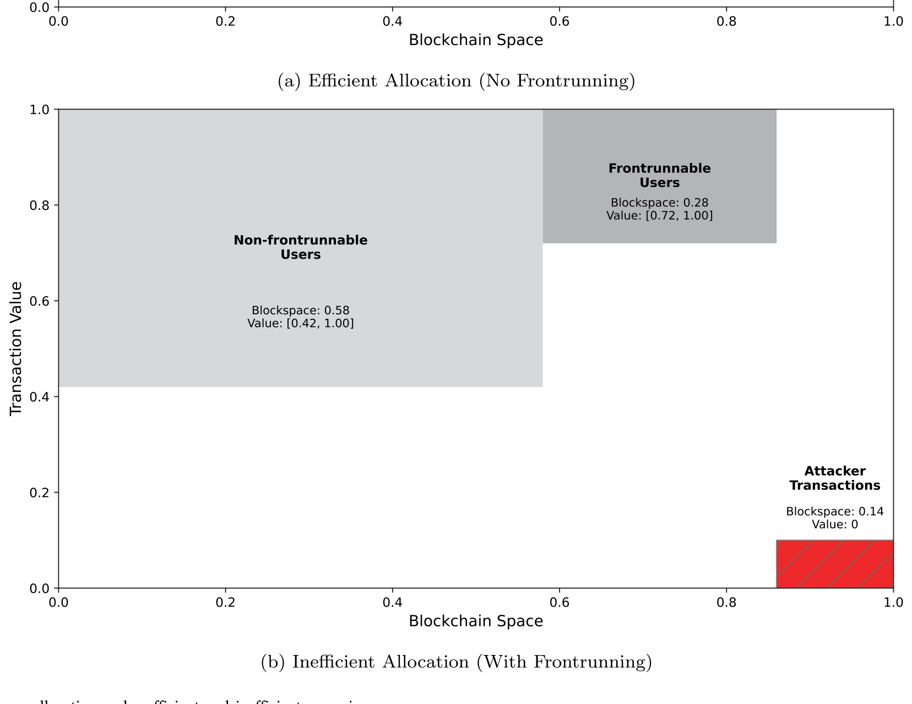
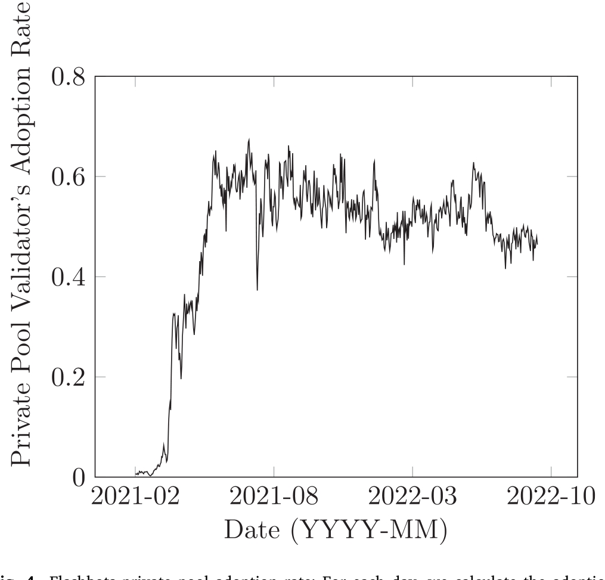
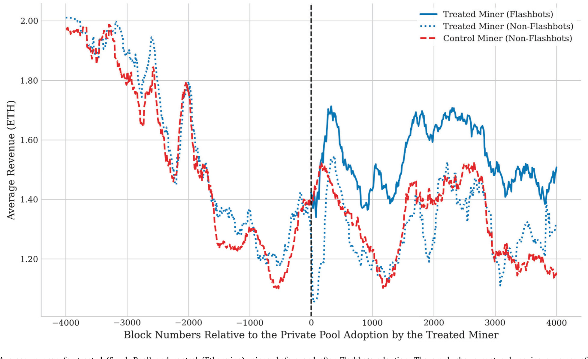
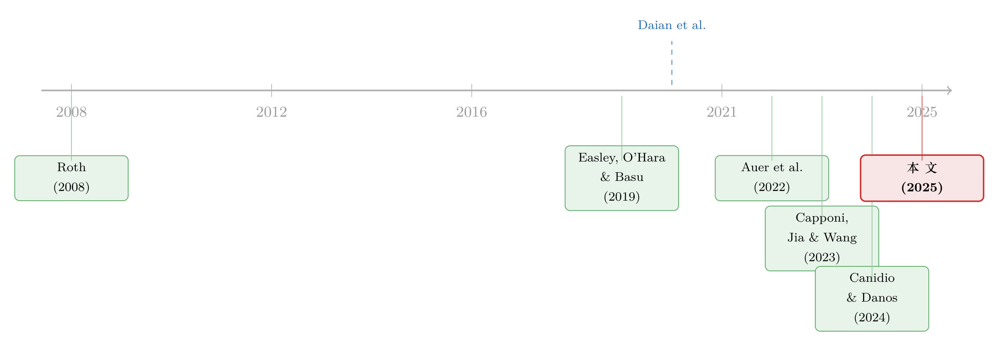

暗黑森林里的「过路费」：抢跑、MEV 与区块链上那场没谈拢的分赃
本文读的是 Capponi, Jia & Wang (2025, Journal of Financial Economics)：公链的结算层天生纵容「系统性抢跑」，把本该高效的区块空间配置搞得一塌糊涂；私有交易池（如 Flashbots）本可以修好它、提升福利，但因为验证者不愿放弃抢跑带来的租金（即 MEV），市场只能停在一个「部分采用」的低效均衡上——抢跑没消失，福利没拉满。作者用一个三阶段博弈把这件事讲透，再用以太坊 Flashbots 的数据一一验证。
1 一笔交易，为什么会在「光天化日」下被抢走
先讲一个让传统金融从业者难以置信的场景。
你在去中心化交易所（如 Uniswap）上挂了一笔买单，想用以太币换某个代币。这笔交易在被打包进区块、最终确认之前，会先广播到一个所有人都能看见的「内存池」（mempool）里。于是，一个守在那里的机器人看到了你：它抢在你前面买入同一个代币（把价格推高），等你的单子成交（价格被进一步推高），它再立刻卖出——一买一卖之间，它把本属于你的价差揣进了自己兜里。你支付了「滑点」（slippage），它赚走了利润。这就是所谓的三明治攻击（sandwich attack），是抢跑（frontrunning）最常见的一种形态。
这不是个别现象。作者统计了 2020 年 5 月到 2022 年 9 月、所有经由 Uniswap V2 路由合约的以太币交易：在 4,150,440 个相关区块里，2,621,819 个（63%）含有「可被抢跑」的交易，610,710 个（14.7%）含有已确认的三明治攻击。平均每次成功攻击，攻击者毛收入约 0.108 以太币；受害者累计损失超过 130,000 以太币，按当时约 \$2000/枚折算，约合 \$2.2 亿。
这在传统金融里几乎是不可想象的。证券交易所有「时间优先」原则，有受监管的中介，有防止抢先交易的红线。可在公链上，这套秩序统统失效了。为什么？作者一针见血地指出两个根因：
第一，去中心化结构无法强制执行「时间优先」。 交易能不能被打包、按什么顺序打包，完全由验证者（validator）说了算——而验证者通常只认一个东西：手续费谁出得高（Buterin, 2015; Nakamoto, 2008）。第二，去中心化和匿名又要求交易必须全网广播，于是你的待处理交易在被打包前就「裸奔」在公共内存池里，谁都能看见、谁都能抢（Daian et al., 2020）。
加密圈有个很传神的比喻：以太坊是一片「暗黑森林」（dark forest）——你的每一笔交易都像森林里点燃的一支火把，立刻招来掠食者。
这里有个关键概念要先说清。验证者从「打包、排序、夹塞、剔除」交易里榨取的、超出正常区块奖励和手续费的那部分价值，叫做最大可提取价值（Maximal Extractable Value, MEV）。它最早叫「矿工可提取价值」（Miner Extractable Value），后来发现这块肥肉可以在结算层的多方之间分配，才改了名。MEV 是本文的「主角」——它既是抢跑的利润来源，也是后面那场「分赃没谈拢」的症结所在。
2 真正的代价：不是被偷的钱，而是被搞乱的「分配」
接着，一个自然的问题是：抢跑的危害，难道就是那 \$2.2 亿被偷走的钱吗？
如果只是财富从受害者转移到攻击者，那还只是个「分配公平」问题。但作者要讲的，是一件更深、也更经济学的事——抢跑制造了严重的配置无效率（allocative inefficiency）。区块空间是稀缺资源，本该留给「估值最高、最该被执行」的交易。可抢跑把这套配置逻辑彻底搅乱了，而且是通过三条环环相扣的机制：
机制一：高昂的抢跑成本，把边际用户挡在门外。 一个可被抢跑的用户，预期到自己会被夹,干脆就不发交易了——于是一些本来很有价值的交易，被排除在区块之外。
机制二：攻击者凭空消耗区块空间。 攻击者的抢跑交易本身不创造任何社会价值，它只是把财富从受害者那里搬运过来，却实打实地占用了宝贵的区块空间。
机制三：错配被进一步放大。 那些本该装下「被排除的高价值交易」的空间，结果被估值更低的「不可抢跑交易」填满了。
把这三条放在一起看，结论就很扎心：抢跑不只是「劫富」，它是在系统性地把区块空间配给了错误的人。作者用一张示意图把「有效配置」和「无效配置」两种情景画在了一起。

Figure 3: Blockchain space allocation under efficient and inefficient scenarios
这正是这篇论文相比早期文献最重要的视角转换。在此之前，大家盯着的是「抢跑让谁亏了钱」；本文盯着的是「抢跑让区块空间配错了人」。从「财富转移」到「配置效率」，问题的性质变了。
3 一个本可以修好它的工具：私有交易池
然后，故事出现了一线转机。
既然抢跑的根源是交易在公共内存池里「裸奔」，那一个直觉的解法就是：别让它裸奔。这就是私有交易池（private pool） 的思路——用户把交易直接、私密地发给验证者，绕开公共内存池，攻击者根本看不见，自然也就无从抢起。以太坊上的 Flashbots 就是这样一个把用户和验证者直连的私密通道。
到这里，似乎皆大欢喜：技术现成、能挡抢跑、能提升福利。可作者笔锋一转，抛出了真正的核心问题：技术摆在那儿，凭什么大家就会去用它？
具体而言：验证者愿意放弃抢跑的租金吗？用户有动力转去私有池吗？私有池真能消除抢跑、提升整体福利吗?
这才是本文的「文眼」。私有池的故事，从一个技术问题，变成了一个激励相容（incentive compatibility）的问题。
4 模型：一场三阶段的博弈
为了把激励问题讲透，作者搭了一个序贯博弈（sequential game）模型，三类玩家，三个阶段。
- 验证者（validators）：一组同质的验证者，先决定把自己的「验证算力」在公共池和私有池之间怎么分配。
- 用户（users）：一个连续统的「可抢跑用户」（在公共池里会被攻击）+ 一个连续统的「不可抢跑用户」，他们对交易的估值各不相同，要在公共池和私有池之间二选一。
- 攻击者（attackers）：在最后阶段，竞相抢跑那些走公共池的交易。
阶段顺序是：验证者先动 → 用户再选 → 攻击者最后抢。我们用逆向归纳来解。
4.1 私有池里的「执行风险」与攻击者的「真实出价」
私有池不是没有代价的。如果一个验证者没有监控私有池，那么发到私有池的交易就有可能不被打包——这就是执行风险（execution risk）。作者给出的关键设定是：交易不被执行的概率，正比于没有分配给私有池监控的那部分验证算力。设 \(\theta\) 为投入私有池监控的验证算力占比（也就是私有池的「采用率」），则
$$ \Pr(\text{non-execution}) \;=\; 1-\theta . $$
直觉很清楚：监控私有池的算力越多（\(\theta\) 越大），你的私密交易越可能被某个验证者捡起来打包，执行风险越低。
那攻击者呢？聪明的攻击者会两边下注：用私有池来锁定执行优先权，同时也往公共池发一份，以降低不被执行的风险。而真正关键的一步在于——在私有池里，攻击者面对的是一个密封一价拍卖（sealed-bid first-price auction）。在这种格式下，攻击者会报出自己对抢跑机会的真实估值，于是它的全部潜在收益，统统转移给了验证者：
$$ \text{bid}_A \;=\; v_A \quad\Longrightarrow\quad \frac{\text{cost}}{\text{revenue}} \;\to\; 1 . $$
这个「成本收益比趋于 1」是后面要重点检验的实证预测。
4.2 用户的权衡与验证者的两难
可抢跑用户的决策，是在两种风险之间权衡：留在公共池被抢跑 vs. 去私有池但可能不被执行。验证者采用率 \(\theta\) 越高（执行风险越低）、公共池里的抢跑成本越高，用户就越倾向于私有池。
而验证者的两难，才是整篇论文的「心脏」。把更多算力投向私有池，对验证者有两个正向渠道：(i) 寻求保护的用户带来的需求增加，(ii) 通过攻击者的「真实出价」榨取租金。但同时有一个负向渠道：私有池采用率上升会降低执行风险，把用户从公共池吸走，从而减少了总需求、压低了手续费、削弱了攻击者之间的竞争，反而拉低验证者的总收益。
我把验证者的收益分解写成下面这个最核心的式子（捕捉的正是上面这三股力量）：
均衡就藏在这三项的拉锯里。当验证者对「再多投一点算力到私有池」感到无所谓时，内部解出现：
$$ \frac{\partial \Pi_V(\theta)}{\partial \theta}\bigg|_{\theta=\theta^\*} = 0 . $$
4.3 两种均衡：全采用 vs. 部分采用
求解的结论非常漂亮，而且取决于一个关键变量——抢跑风险的高低：
- 抢跑风险高时，存在唯一的、全采用（full adoption）子博弈完美均衡：可抢跑用户被「赶」进私有池，验证者发现把算力留在公共池毫无意义，于是 \(\theta^\*=1\)。这时区块空间配置是有效的，抢跑被彻底消除，高价值交易不再被排除。
- 抢跑风险中等时，却只能得到唯一的、部分采用（partial adoption）均衡：\(0<\theta^\*<1\)。部分采用引入了执行风险，使得一些可抢跑用户明知会被夹，仍然留在公共池。此时验证者恰好对「多投算力到私有池」无所谓——直接收益正好被「区块奖励总量下降」的间接损失抵消。这个均衡是低效的：抢跑摩擦没被消除，区块空间被浪费，高价值交易仍被排除在外。
注意这个反转：私有池技术明明能修好系统，但市场的内生激励，偏偏把它停在了一个「修了一半」的地方。这不是技术不行，是分赃没谈拢。
5 这其实是一个古老的故事：敲竹杠（hold-up）
但真正关键的洞察在于——作者指出，这种「采用不到位」的失败，本质上就是产业组织里那个经典的敲竹杠问题（hold-up problem）。
监控私有池的好处，主要落在可抢跑用户头上（他们免于被夹）；可付出算力成本、还要放弃 MEV 租金的，却是验证者。受益方和投入方不是同一拨人，于是投入方的激励天然不足——这正是 Williamson (1979) 笔下「专用性投资因事后无法被补偿而投资不足」的翻版。
那怎么破？作者给出的解法同样经典：一份事前的合约。让可抢跑用户事前承诺，额外付给验证者一笔费用，作为「在私有池里执行我交易」的报酬。这样就重新对齐了激励，把均衡推回唯一的、社会有效的全采用。技术上，这靠的是预签名交易（pre-signed transactions）——用户把签好名的交易发进私有池，从而绕开了传统双边交易里那种「事后可以反悔、承诺不可信」的老大难。
「用一个可信的事前承诺，去治好事后激励错配」——这个套路在金融与产业组织里反复出现。比如把柠檬市场治好的，未必是更多信息，而是中间商「先把货买下来」的承诺（关于这一点，可参见《承诺去交易：为什么「先卖给中间商」反而能治好柠檬市场》）。区块链只是给这个老故事，换了一身代码做的新衣服。
6 数据：以太坊真的停在了「部分采用」上吗
理论讲完，于是该让数据说话了。作者构造了一个把「交易级抢跑信息 + 内存池数据 + 区块级统计」拼在一起的数据集，围绕 Flashbots 检验了模型的三个核心预测。
预测一（部分采用）：成立。 Flashbots 上线、经过一段初始调整期后，私有池采用率稳定在 50%–60% 之间——既没归零，也没到 100%，正是模型预言的「部分采用」内部解。

Figure 4: Flashbots private pool adoption rate: For each day, we calculate the adoption
预测二（验证者赚得更多）：成立。 作者利用两大以太坊矿池错峰采用 Flashbots 这一点，做了双重差分（difference-in-differences, DiD）。结果：率先采用的 Spark Pool，相比对照矿池 Ethermine，采用后每个区块多赚 0.066 以太币。进一步的三重差分（triple difference）确认，这部分增量来自私有区块——印证了「私有区块比公共区块给矿工带来更高收益」。

Figure 6: Average revenue for treated (Spark Pool) and control (Ethermine) miners before and after Flashbots adoption. The graph shows centered moving
预测三（用户对抢跑风险敏感）：成立。 预期抢跑成本越高的用户，越倾向用私有池。量级上，预期损失每增加 1 以太币，使用私有池的概率上升 0.35–0.41。
预测四（成本收益比趋于 1）：成立。 经由私有池的抢跑攻击，其成本收益比迅速集中到 1 附近——回归显示，经 Flashbots 提交的三明治交易，成本收益比要高出 12.4 个百分点。这正对应密封一价拍卖下「攻击者把全部租金让渡给验证者」的预测。
四个预测，四个「成立」。模型和数据严丝合缝地咬在了一起。
7 文献脉络
把这篇论文放回它所在的脉络里，会看得更清楚。
最上游，是 Roth (2008) 总结的市场设计思想：一个有效的市场，需要足够的「厚度」、能克服「拥堵」、并且对参与者「安全」（Roth et al., 2004; Roth & Xing, 1997）。本文恰恰是把这套原则搬到了公链的交易提交机制上——只不过区块链有个传统市场没有的麻烦：你没法禁止某些行为（比如抢跑），也没法强迫大家加入新机制（比如私有池）。

中游，是区块链经济学自己长出来的几条线。一条是交易费市场与挖矿：Easley, O'Hara & Basu (2019) 研究比特币手续费的演化，Biais et al. (2019) 分析分叉激励。一条是MEV 与抢跑的实证刻画：Daian et al. (2020) 的「Flash Boys 2.0」把抢跑、MEV 与共识不稳定第一次系统性地摆上台面，Auer et al. (2022) 给出了 MEV 规模的估计，Park (2023) 剖析了自动做市商里的三明治攻击。还有一条是协议层的解法：Canidio & Danos (2024) 提出「承诺—揭示」协议，从底层协议去防抢跑。
本文站在哪儿？它不动协议，而是盯住结算层里一个已经被部署的现成方案——私有池，问一个别人没正面回答的问题：它会不会被充分采用，福利含义到底如何。和作者自己更早的 Capponi, Jia & Wang (2023a)（聚焦私有池对价格发现、对知情交易者的影响）相比，本文把镜头拉到了整体福利与区块空间的配置效率上。
8 评论与延伸（Q&A + 研究方向）
(a) 几个可能的疑问
Q：私有池既然能挡抢跑，为什么验证者不全力拥抱它，非要停在 50%–60%？
因为对验证者而言，私有池是把「双刃剑」。一方面它带来用户需求和攻击者的真实出价租金；另一方面，采用率越高、执行风险越低，用户越会离开公共池，结果是总需求、手续费和攻击者竞争一起萎缩。在中等抢跑风险下，这两股力量在某个内部 \(\theta^\*\) 上恰好抵消，验证者于是「无所谓再多投」——部分采用就是这么钉死的。
Q：这跟普通的「敲竹杠」到底像在哪儿？
受益方（可抢跑用户）和投入方（验证者）不是同一拨人，投入方事后拿不到应得补偿，于是事前投资不足。这正是 Williamson (1979) 的专用性投资敲竹杠。区别只是：传统场景靠长期合约或纵向一体化来解，本文靠预签名交易这种「天然可信的事前承诺」来解，反而比传统双边交易更好办。
Q：DiD 里 Spark Pool 多赚的 0.066 以太币，会不会只是它本来就更强、而非 Flashbots 的功劳？
作者用三重差分把这个增量进一步归因到了私有区块而非矿池整体。也就是说，多赚的钱来自「同一个矿工的私有区块 vs. 公共区块」这层对比，而不是「Spark vs. Ethermine」这层。这让「是 Flashbots 在起作用」的解释更站得住。当然，错峰采用是否真的外生（会不会强矿池才先采用），仍是读者应当存疑的地方。
Q：「成本收益比趋于 1」为什么重要？
它是私有池拍卖格式的「指纹」。密封一价拍卖下，攻击者最优策略是报真实估值，于是租金全数流向验证者，成本逼近收益。数据里
12.4个百分点的上移，等于在说「攻击者赚到的，几乎全被验证者拿走了」——MEV 的归宿，从攻击者悄悄换成了验证者。
Q：消除了抢跑，是不是就万事大吉、社会福利最优了？
没那么简单。全采用消除了抢跑摩擦、修好了配置效率，但 MEV 租金并没有凭空消失，只是从攻击者转移到了验证者手里。福利改善主要来自「不再排除高价值交易、不再浪费区块空间」这块配置效率，而不是分配上的均贫富。
Q：2022 年 9 月以太坊上线 PBS 之后，这套结论还成立吗？
作者明确提示，提议者—构建者分离（proposer-builder separation, PBS）让私有池市场更碎片化，新的私有池不断出现、构建者之间竞争加剧。本文的样本主要落在 PBS 之前，结论刻画的是那个相对集中的阶段；PBS 之后的多方竞争如何改写激励，是个开放问题。
(b) 几个可能的研究问题与提案
1. PBS 之后的「私有池竞争」如何重新分配 MEV？ - 【经济故事】本文是「验证者 vs. 用户」的纵向分赃；PBS 把构建者拉了进来，变成多层、多方的横向竞争。竞争加剧理论上会把租金从验证者手里再挤出来一部分——挤给谁？用户、构建者，还是消散为效率？ - 【可行性】中。链上数据公开可得，PBS 前后是天然的断点；难点在于给「构建者市场结构」找到干净的外生变动来做识别。
2. 把「抢跑→配置无效率」的框架搬到公司债的「交易前信息泄露」上。 - 【经济故事】公司债是场外（OTC）报价市场，大额询价同样会泄露意图、招来抢先交易，本质上也是一种「内存池裸奔」。私有池之于链上，类似 RFQ（request-for-quote）的私密化之于债市——它会不会同样停在某个低效的「部分采用」上？ - 【可行性】中。可用 TRACE 加交易商层面数据刻画信息泄露与执行成本；识别上可借助报价平台规则变更，但「私密化程度」难以直接观测，需要代理变量。（与债市流动性的关联，可对照《谁在持有这张债券，决定了它的价格》的视角。）
3. 「外资持有人」会不会系统性地更容易被抢跑？ - 【经济故事】跨境、跨时区的参与者往往在信息和基础设施上处于劣势，更可能成为抢跑或交易前信息泄露的「猎物」。如果链上/跨市场的抢跑损失在不同类型持有人之间分布不均，那它就是一种隐性的「外资税」。 - 【可行性】低到中。链上钱包难以可靠映射到「外资」身份；若退而求其次用跨市场（如 A/H、ADR）数据近似，则需要把抢跑损失从其他价差成分里干净地剥离出来。
4. 「合约式解法」在现实里能不能真的落地、被采用？ - 【经济故事】本文证明了「用户事前付费承诺」能恢复全采用，但这本身又是一个采用问题——谁先签、网络效应如何、会不会又卡在另一个部分采用上？理论解和现实落地之间，往往还隔着一层。 - 【可行性】中。可把不同私有池/中继的费用合约设计做成横截面，看采用率与合约条款的关系；近似实验或可借助某个中继上线「付费优先」功能的时点。
9 参考文献
我的判断：这篇论文最漂亮的地方，是把一个看似纯技术的「抢跑/MEV」现象，干净利落地翻译成了经济学家熟悉的两件事——配置效率与敲竹杠，并且给出了一个理论预测被四项独立实证一一验证的闭环。它真正的贡献不在于「发现了抢跑」（那早有人做），而在于指出私有池的失败不是技术失败，而是激励失败，并给出了可落地的合约解。
对识别，我有两点保留。其一，DiD/三重差分依赖两大矿池「错峰采用」的近似外生性，但强矿池为何先采用、采用时点是否与其他冲击重合，文中需要更多排除性证据。其二，样本主要落在 PBS 之前那个相对集中的阶段，外推到今天碎片化、构建者主导的市场要谨慎。后续我最想看到的，是把这套「配置效率」框架接到 PBS 之后的多方竞争上，以及——更贴近我自己的兴趣——把「交易前信息泄露导致配置无效率」的逻辑，搬到公司债等 OTC 市场里去检验。
- Auer, R., Frost, J., & Pastor, J. M. V. (2022). Miners as Intermediaries: Extractable Value and Market Manipulation in Crypto and DeFi. BIS Bulletins 58, Bank for International Settlements.
- Biais, B., Bisière, C., Bouvard, M., & Casamatta, C. (2019). The Blockchain Folk Theorem. Review of Financial Studies 32(5), 1662–1715.
- Buterin, V. (2015). A Next Generation Smart Contract & Decentralized Application Platform. Ethereum White Paper.
- Canidio, A., & Danos, V. (2024). Commitment against Front-running Attacks. Management Science 70(7), 4429–4440.
- Capponi, A., Jia, R., & Wang, Y. (2023a). Blockchain Private Pools and Price Discovery. AEA Papers and Proceedings 113, 253–256.
- Daian, P., Goldfeder, S., Kell, T., Li, Y., Zhao, X., Bentov, I., Breidenbach, L., & Juels, A. (2020). Flash Boys 2.0: Frontrunning in Decentralized Exchanges, Miner Extractable Value, and Consensus Instability. 2020 IEEE Symposium on Security and Privacy (SP), 910–927.
- Easley, D., O'Hara, M., & Basu, S. (2019). From Mining to Markets: The Evolution of Bitcoin Transaction Fees. Journal of Financial Economics 134(1), 91–109.
- Park, A. (2023). The Conceptual Flaws of Decentralized Automated Market Making. Management Science 69(11), 6417–7150.
- Roth, A. E. (2008). What Have We Learned from Market Design? Economic Journal 118(527), 285–310.
- Roth, A. E., Sönmez, T., & Ünver, M. U. (2004). Kidney Exchange. Quarterly Journal of Economics 119(2), 457–488.
- Torres, C. F., Camino, R., et al. (2021). Frontrunner Jones and the Raiders of the Dark Forest: An Empirical Study of Frontrunning on the Ethereum Blockchain. 30th USENIX Security Symposium, 1343–1359.
- Williamson, O. E. (1979). Transaction-Cost Economics: The Governance of Contractual Relations. Journal of Law and Economics 22(2), 233–261.